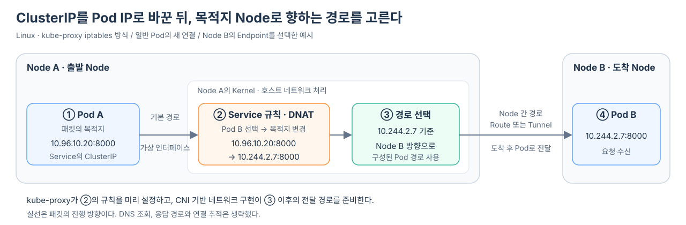

Pod A가 DNS를 통해 Service의 ClusterIP 10.96.10.20을 얻었다고 하자. 이 주소는 Node IP도 아니고 Pod IP도 아니다. 그렇다면 Pod A는 이 주소만 보고 목적지 Pod가 어느 Node에 있는지 어떻게 알아낼까?
여기서는 Linux의 kube-proxy iptables 방식과 가상 Interface로 연결된 일반 Pod를 기준으로, 새 연결이 다른 Node의 Pod로 향하는 과정을 살펴본다. DNS 조회는 끝났고 Service에는 사용 가능한 Endpoint가 있다고 가정한다.
패킷은 먼저 Pod A가 실행 중인 Node의 호스트 Network로 나오고, 그 Node의 Service 규칙이 ClusterIP를 실제 Pod IP로 바꾼다. 이후 변경된 목적지로 전달할 경로를 고른다. Pod와 Node의 네트워크 처리는 같은 Linux Kernel 안의 서로 다른 Network Namespace에서 이루어진다.
ClusterIP는 어느 Node의 주소도 아니다
다음 주소가 있다고 가정하자.
| 대상 | IP |
|---|---|
| Pod A | 10.244.1.5 |
model-api Service |
10.96.10.20 |
| Backend Pod B | 10.244.2.7 |
| Pod A가 실행 중인 곳 | Node A |
| Pod B가 실행 중인 곳 | Node B |
Service의 10.96.10.20은 Service용 IP 대역에서 할당된 가상 IP다. 이 글의 iptables 방식에서는 ClusterIP를 Network Interface에 붙일 필요 없이 패킷 처리 규칙으로 구현한다. IPVS 방식처럼 ClusterIP를 가상 Interface에 설정하는 구현도 있으므로, 제목의 “아무 Node도 갖고 있지 않은” 상황은 이 글의 예시 범위에서 이해해야 한다.
ClusterIP가 10으로 시작한다는 사실이 목적지 Node를 알려 주는 것도 아니다. 이 예시의 Cluster가 Service용 주소 대역으로 해당 사설 IP 범위를 선택했을 뿐이다. 중요한 것은 각 Node에 이 주소를 알아보는 Service 전달 규칙이 준비되어 있다는 점이다.
Pod는 목적지 Node가 아니라 기본 경로만 안다
Pod A의 Application이 10.96.10.20:8000으로 연결을 요청하면, Pod 안의 Network Stack은 먼저 자신의 Routing Table을 본다.
이 예시에서는 Pod의 Routing Table에 ClusterIP를 위한 더 구체적인 경로가 없으므로 기본 경로를 사용한다. 패킷은 Pod의 가상 Network Interface를 지나 Node A의 호스트 Network 처리 단계로 넘어간다. 실제 Interface와 Gateway 구성은 Network 구현에 따라 다를 수 있다.
Pod가 별도 Kernel을 가진 것처럼 보이는 이유, Pod의 eth0과 Node 쪽 Interface가 연결되는 방식, 그리고 Packet이 iptables의 PREROUTING까지 도달하는 내부 과정은 Pod의 패킷은 어떻게 Node의 iptables 규칙까지 도착할까?에서 Network Namespace와 veth pair부터 이어서 살펴본다.
Pod A
목적지 10.96.10.20:8000
→ Pod의 기본 경로
→ Pod의 가상 Network Interface
→ Node A의 Kernel
이 시점까지 Pod A는 Pod B가 어느 Node에 있는지 모른다. 10.96.10.20이라는 Service IP가 Node B를 가리킨 것도 아니다. 패킷은 단지 출발 Pod가 있는 Node A로 나온 것이다.
출발 Node에서 Service 규칙이 패킷을 먼저 가로챈다
각 Node의 kube-proxy는 Service와 EndpointSlice를 관찰하고, Service IP와 Port로 향하는 패킷을 실제 Endpoint로 연결하는 규칙을 미리 구성한다.
Node A로 나온 패킷의 목적지가 10.96.10.20:8000이면 이 규칙과 일치한다. 규칙은 Service의 Endpoint 중 하나인 Pod B를 선택하고 목적지 주소를 바꾼다.
변경 전
출발지 10.244.1.5
목적지 10.96.10.20:8000
↓ 목적지 주소 변환(DNAT)
변경 후
출발지 10.244.1.5
목적지 10.244.2.7:8000
DNAT는 Destination Network Address Translation, 즉 목적지 주소 변환이다. 이 예시에서는 kube-proxy가 준비한 iptables 규칙을 Kernel이 적용한다. Service 규칙과 DNAT는 별개의 중계 장치가 아니라, 규칙이 Endpoint를 선택하고 목적지를 바꾸는 하나의 처리 과정이다. 새 연결에 선택된 변환은 연결 추적을 통해 후속 패킷에도 유지된다. IPVS, nftables 또는 eBPF 구현의 세부 처리 위치와 경로는 이 그림과 다를 수 있다.

Pod IP로 바뀐 뒤에야 목적지 Node를 찾는다
목적지가 10.244.2.7로 바뀌고 나면 이제 일반적인 Pod Network의 Routing 문제가 된다. CNI Plugin이 구성한 경로는 10.244.2.7이 어느 방향에 있는지 판단할 수 있게 한다.
설명을 위해 Node A의 Routing 정보가 다음과 같다고 생각해 보자.
10.244.2.0/24 대역은 Node B 방향으로 보낸다.
10.244.2.7은 이 대역에 속하므로 패킷은 CNI 구현이 준비한 Route나 Overlay Tunnel을 따라 Node B로 이동한다. Node B에 도착한 뒤에는 Pod B의 가상 Network Interface로 전달된다.
Service IP로 목적지 Node 선택
이 아니라 다음 순서인 것이다.
Service IP를 실제 Pod IP로 변경
→ 실제 Pod IP를 기준으로 목적지 Node Routing
선택된 Pod가 Node A에 있다면 Node 사이를 이동할 필요 없이 Node A 내부 경로로 전달된다. 선택된 Pod가 Node B에 있다면 그때 Node 사이의 경로를 사용한다.
아무도 갖고 있지 않은 IP가 길을 잃지 않는 이유
Service 규칙이 없다면 10.96.10.20을 실제로 소유한 장비가 없으므로 정상적으로 목적지에 도착할 수 없다. 하지만 패킷이 출발 Node의 정상적인 Routing을 따라 멀리 이동하기 전에 Kernel의 Service 규칙이 이 주소를 알아보고 실제 Pod IP로 바꾼다.
따라서 ClusterIP는 물리적인 목적지 주소라기보다 다음 동작을 실행시키는 가상 접근점으로 이해할 수 있다.
10.96.10.20:8000으로 보내기
= model-api의 Endpoint 중 하나를 골라 그 Pod IP로 보내기
이 동작이 어느 Node에서 요청을 시작해도 가능해야 하므로, 기본적인 kube-proxy 구성에서는 각 Node가 같은 Service와 EndpointSlice 상태를 관찰해 자신의 전달 규칙을 유지한다.
전체 흐름을 한 줄로 정리하면 다음과 같다.
Pod가 ClusterIP로 보낸 패킷은 먼저 출발 Node의 Kernel로 나오고, 그곳에서 실제 Pod IP로 바뀐 뒤에야 CNI가 만든 경로를 따라 목적지 Node로 이동한다.